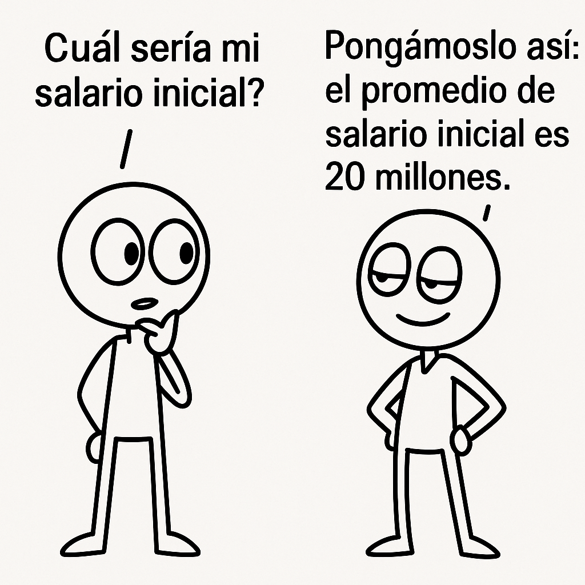
3 Explorando tus Datos con Estadísticos Descriptivos
Imagina que eres gerente de un restaurante que acaba de lanzar un nuevo menú y quieres evaluar la satisfacción de tus clientes a partir de las calificaciones que te han dado. Tienes cientos de puntuaciones y necesitas entender rápidamente cuál es la opinión general, qué tan variadas son las experiencias y si hay patrones o valores atípicos que merecen atención.
¿Cómo puedes resumir y comprender toda esa información de forma clara y sencilla? Para eso utilizamos los estadísticos descriptivos, herramientas fundamentales que nos permiten condensar grandes cantidades de datos en medidas simples y significativas.
Estas medidas serán esenciales para tomar decisiones informadas que mejoren tu decisiones.
3.1 Estadísticos Descriptivos
Los estadísticos descriptivos son herramientas clave que nos permiten resumir y comprender mejor la información contenida en nuestros datos. Para facilitar su estudio, los podemos clasificar en cuatro categorías principales:
- Medidas de tendencia central: Estas nos muestran el valor típico o representativo en un conjunto de datos, es decir, alrededor de qué número se agrupan la mayoría de las observaciones.
- Medidas de variación: Nos indican qué tan dispersos o concentrados están los datos respecto a esa tendencia central, ayudándonos a entender la consistencia o diversidad dentro de la información.
- Medidas de forma: Describen la distribución general de los datos, revelando si están simétricos, sesgados hacia un lado o presentan picos o colas particulares.
- Medidas de relación: Evalúan cómo dos variables numéricas se relacionan entre sí, especialmente si existe una conexión lineal que pueda ser útil para análisis más avanzados.
3.2 Medidas de Tendencia Central
Cuando queremos entender las calificaciones que los clientes dan a tu restaurante, buscamos encontrar un valor que represente lo que la mayoría piensa. Las medidas de tendencia central nos ayudan a esto.
3.2.1 Media (Promedio)
La media o promedio es una forma simple pero útil de resumir un conjunto de datos. La media es el valor que obtienes al sumar todas las calificaciones y dividirlas entre el número total de clientes.
Matemáticamente se escribiría así:
\[ \text{Media} = \bar{x} = \frac{x_1 + x_2 + \cdots + x_n}{n} \]
Por ejemplo, si cinco clientes dieron las calificaciones: 4, 5, 3, 4 y 5, la media será:
\[ \bar{x} = \frac{4 + 5 + 3 + 4 + 5}{5} = \frac{21}{5} = 4.2 \]
Sin embargo la media, tiene limitaciones: no muestra cómo están distribuidos los datos y puede ser engañosa si hay grandes diferencias entre los valores. Por ejemplo:
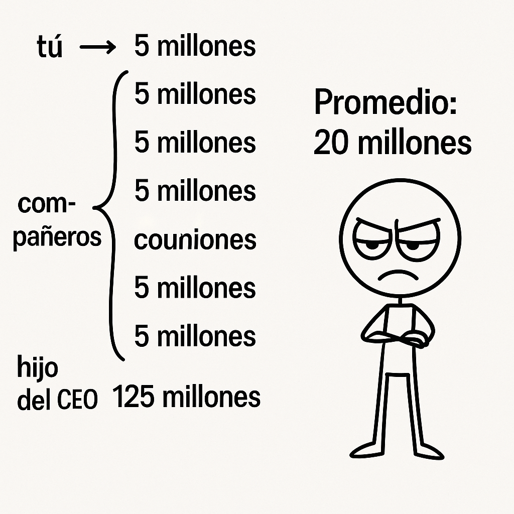
Aquí hay otro ejemplo donde la media es la misma en ambas situaciones pero el contexto individual que esconde es muy diferente:
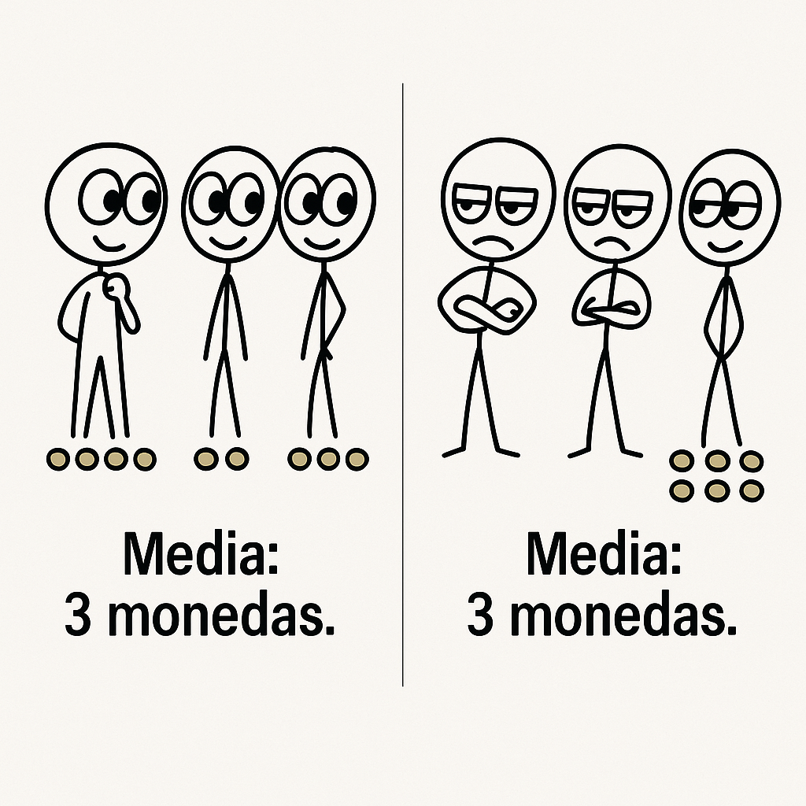
3.2.2 Mediana
Volviendo a las calificaciones de tu restaurante, la mediana es el valor que está justo en el medio cuando ordenas todas las opiniones de menor a mayor. Esto significa que la mitad de los clientes dieron una calificación igual o menor que la mediana, y la otra mitad dio una calificación igual o mayor.
Por ejemplo, si tus clientes calificaron así: 3, 4, 4, 5, 5, la mediana es 4 — porque es el valor que divide el grupo en dos partes iguales.
\[ \text{Mediana} = \text{valor central en datos ordenados} \]
Una gran ventaja de la mediana es que no se ve afectada por calificaciones muy bajas o muy altas que podrían distorsionar la media. Por ejemplo, si alguien puso un 1 o un 10, la mediana sigue mostrando el punto medio real de la mayoría.
Sin embargo, la mediana no nos dice qué tan dispersas están las calificaciones a cada lado. Por eso, para entender mejor la variabilidad de las opiniones, necesitaremos otras medidas que veremos más adelante.
A continuación podemos ver un ejemplo donde la mediana es usada para entregar un mensaje erróneo:
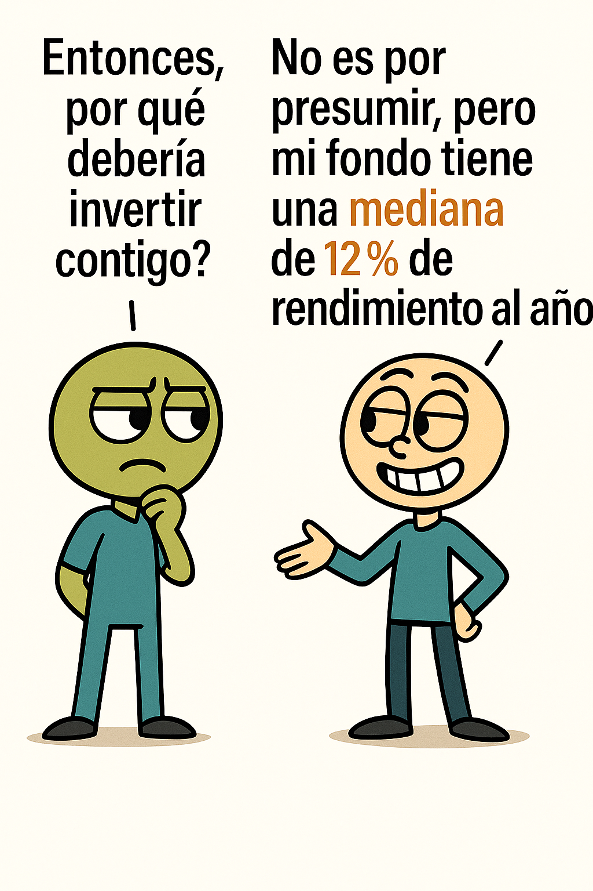
Pero, los rendimientos anuales del fondo:
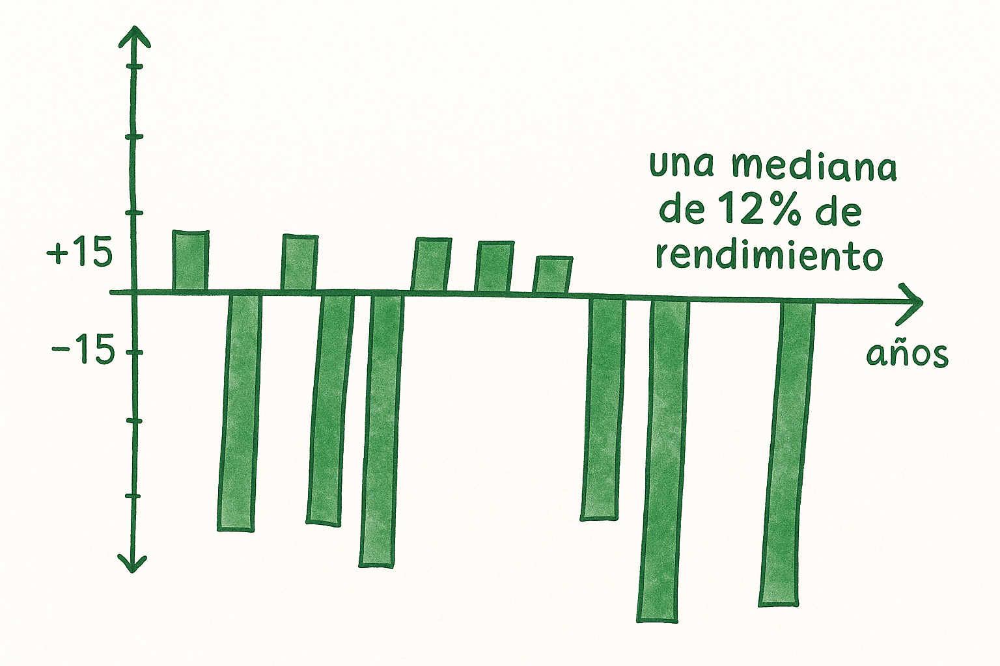
Miremos otro ejemplo donde la mediana similar no implica datos similares. Siempre hay tener una combinación de datos para tomar decisiones correctas
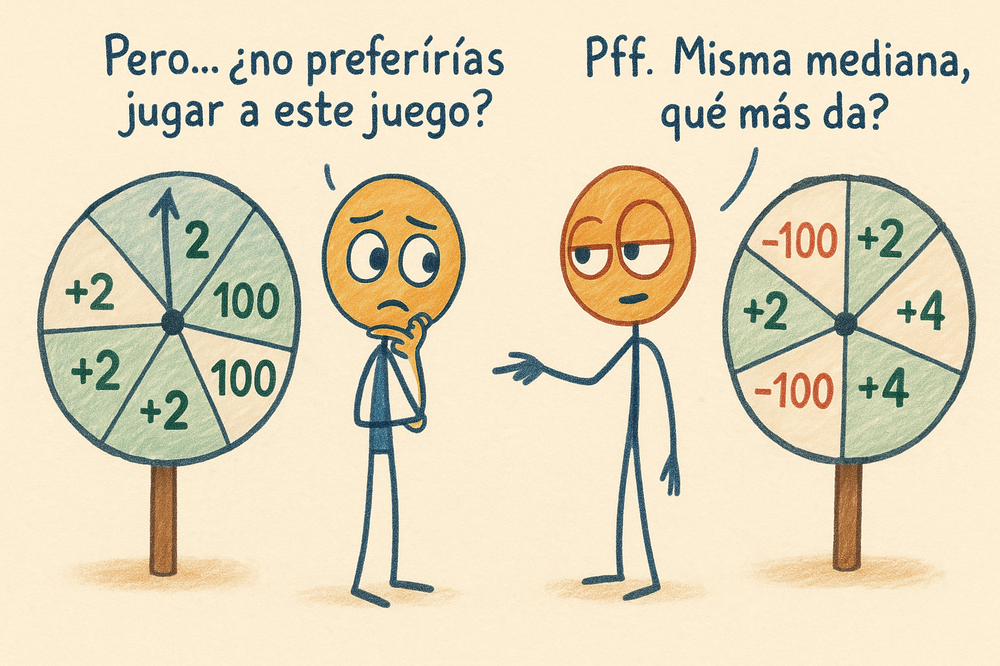
3.2.3 Moda
La moda es la calificación que más se repite entre tus clientes. Es como la opinión más común o popular sobre tu restaurante.
Por ejemplo, si las calificaciones de tus clientes fueron: 3, 4, 4, 5, 5, tanto 4 como 5 se repiten dos veces, por lo que hay dos modas: 4 y 5.
Si no hay repeticiones exactas, se pueden agrupar en categorías y tomar como moda la más común. Es útil especialmente con datos no numéricos, como colores o preferencias políticas, donde no tiene sentido calcular promedios.
\[ \text{Moda} = \text{valor que aparece con mayor frecuencia} \]
Su limitación: no considera la totalidad ni la distribución de los datos, y lo más común no siempre es lo más representativo. Miremos este ejemplo:
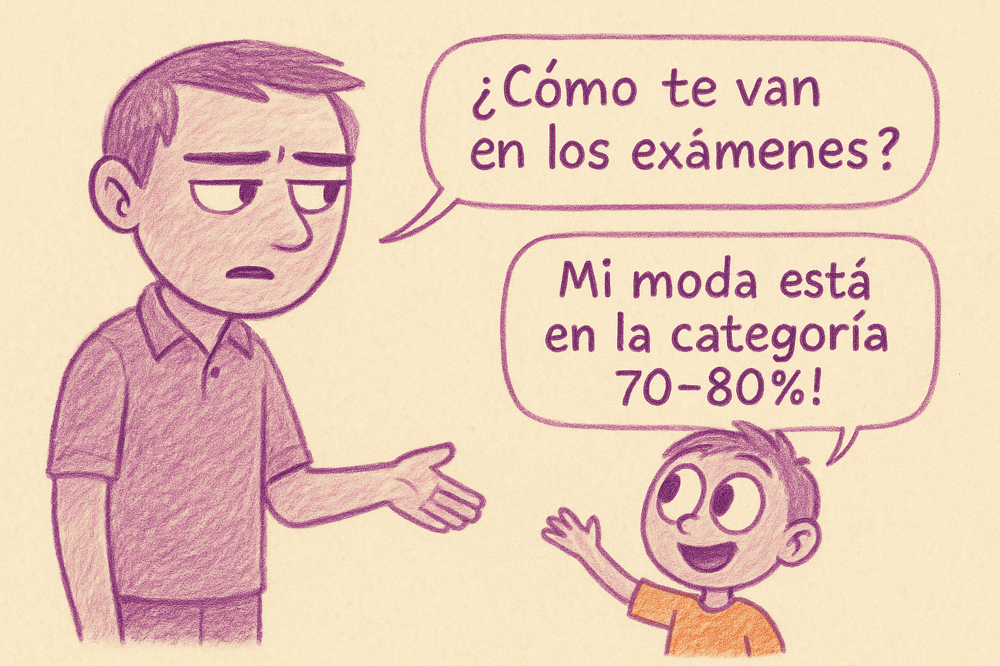
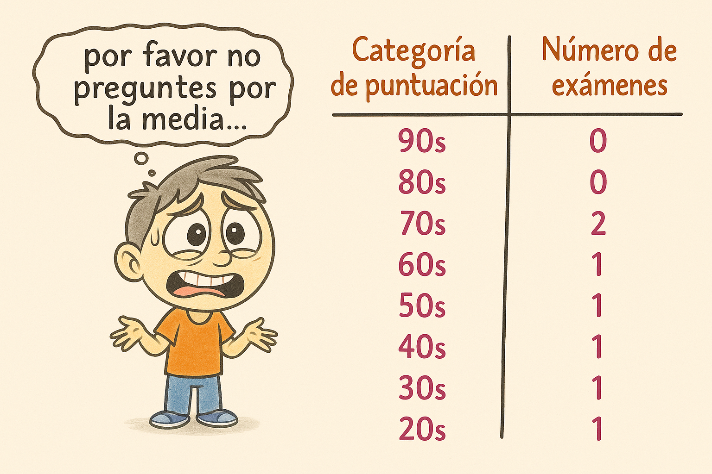
3.3 Medidas de Variación
Las medidas de variación nos ayudan a entender qué tan diferentes o dispersos están los datos entre sí. Es decir, nos dicen si las opiniones o valores están muy juntos o muy separados.
3.3.1 Rango
Las medidas de variación nos ayudan a entender qué tan diferentes o dispersos están los datos entre sí. Es decir, nos dicen si las opiniones o valores están muy juntos o muy separados.
Por ejemplo, si las calificaciones en tu restaurante van desde 2 hasta 5, el rango sería:
\[ \text{Rango} = 5 - 2 = 3 \]
Esto nos dice que las opiniones varían en un rango de 3 puntos, desde una calificación baja hasta una alta.
Su principal ventaja es su simplicidad, da una idea rápida del “ancho” del conjunto de datos.
Pero su debilidad es igual de clara, solo considera los valores extremos, ignorando por completo todos los datos intermedios.
Miremos un ejemplo de un rango que da una impresión incorrecta:
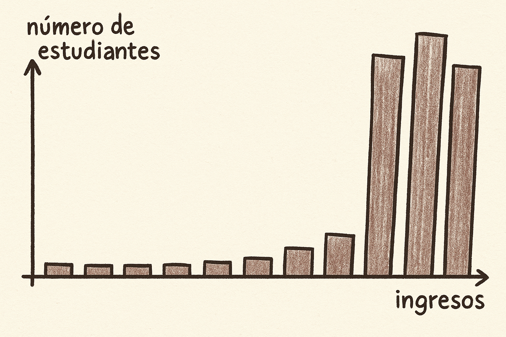
3.3.2 Varianza y Desviación Estándar
La varianza y la desviación estándar son herramientas que nos ayudan a entender qué tan dispersos están los datos con respecto a su media.
Imagina que tienes varios números y quieres saber si están todos cerca del promedio o si están muy separados entre sí.
Para entender qué tan dispersas están las calificaciones de tus clientes respecto al promedio, usamos dos medidas fundamentales: la varianza y la desviación estándar:
- Una desviación estándar baja significa que los datos están cerca del promedio.
- Una alta desviación estándar indica mucha dispersión.
Si quisieras “cocinar” la varianza en tu propia cocina, la receta sería así:
- Encuentra la media de todas las calificaciones.
- Calcula qué tan lejos está cada calificación de esa media (la diferencia entre cada calificación y la media).
- Eleva al cuadrado cada una de esas diferencias para evitar que se cancelen y para dar más peso a las diferencias grandes.
- Suma todas esas diferencias al cuadrado y calcula el promedio dividiendo entre el número de calificaciones menos uno.
Matemáticamente, si tienes ( n ) calificaciones ( x_1, x_2, …, x_n ) y la media ( {x} ), la varianza se calcula así:
\[ \text{Varianza} = s^2 = \frac{1}{n-1} \sum_{i=1}^n (x_i - \bar{x})^2 \]
Pero como la varianza está al cuadrado, no es fácil interpretarla directamente, pues sus unidades no son las mismas que las de las calificaciones. Por eso usamos la desviación estándar, que es la raíz cuadrada de la varianza y nos da una medida en las mismas unidades originales.
\[ \text{Desviación Estándar} = s = \sqrt{s^2} \]
Por ejemplo, si las calificaciones fueron: 4, 5, 3, 4 y 5, la media es:
\[ \bar{x} = \frac{4 + 5 + 3 + 4 + 5}{5} = 4.2 \]
Luego, calculamos la varianza:
\[ s^2 = \frac{(4 - 4.2)^2 + (5 - 4.2)^2 + (3 - 4.2)^2 + (4 - 4.2)^2 + (5 - 4.2)^2}{4} = 0.7 \]
Y finalmente, la desviación estándar es:
\[ s = \sqrt{0.7} \approx 0.84 \]
Esto significa que, en promedio, las calificaciones se alejan de la media en aproximadamente 0.84 puntos.
A diferencia del rango, que solo considera los valores más extremos, la varianza y la desviación estándar toman en cuenta todos los datos. Por eso ofrecen una visión más completa de la dispersión. Sin embargo, también tienen una desventaja: si hay un solo valor muy alejado (un valor extremo), puede aumentar mucho la varianza, aunque la mayoría de los datos estén cerca de la media. Mira el ejemplo a continuación, para entenderlo mejor:
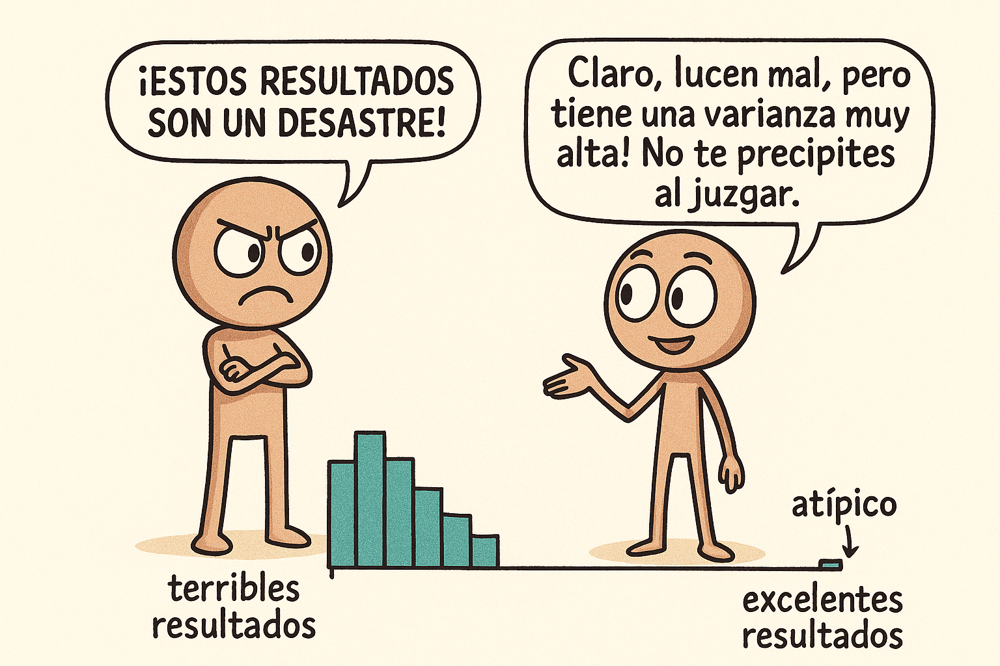
3.3.3 Percentil, Cuartiles
Imagina que quieres saber cómo se comparan las calificaciones de tus clientes con todas las demás. Los percentiles nos ayudan a entender la posición relativa de una calificación dentro del grupo.
Un percentil nos dice qué porcentaje de las calificaciones está por debajo de cierto valor. Por ejemplo, el percentil 25 indica el punto bajo el cual se encuentra el 25% de las calificaciones más bajas.
Si una calificación está en el percentil 25, significa que el 25% de los clientes dio una calificación igual o menor que esa, y el 75% dio una calificación más alta.
Esto es útil para entender la posición relativa de una calificación sin que las opiniones muy bajas o muy altas influyan demasiado.
Sin embargo, los percentiles no nos dicen qué tan separados están los datos ni qué tan extremos son esos valores.
Los cuartiles son un tipo especial de percentiles que dividen las calificaciones en cuatro grupos iguales, cada uno con el 25% de las opiniones.
- El primer cuartil (Q1) es igual al percentil 25.
- El segundo cuartil (Q2) es la mediana, el punto medio (percentil 50).
- El tercer cuartil (Q3) es el percentil 75.
Esto permite resumir cómo se distribuyen las calificaciones y saber en qué grupo se ubica cada opinión, incluso si hay calificaciones muy bajas o muy altas.
3.3.4 Rango Intercuartílico (RIC)
Para entender mejor cómo varían las calificaciones en la parte central de los datos, usamos el Rango Intercuartílico, o RIC, que es la diferencia entre el tercer cuartil y el primer cuartil:
\[ RIC = Q3 - Q1 \]
El RIC mide la dispersión del 50% central de las calificaciones, ignorando las opiniones más bajas y más altas que podrían ser atípicas.
Por ejemplo, si el primer cuartil es 3.5 y el tercer cuartil es 4.5, el RIC sería:
\[ RIC = 4.5 - 3.5 = 1.0 \]
Esto indica que la mitad central de las calificaciones está dentro de un rango de 1 punto, mostrando cuán consistentes son las opiniones principales.
El RIC es muy útil porque, a diferencia del rango total, no se ve afectado por calificaciones extremas y nos da una idea clara de la variabilidad donde está la mayoría de los datos.
3.3.5 Diagrama de Caja y Brazos (Boxplot)
Para visualizar fácilmente la distribución de las calificaciones de tus clientes, usamos el diagrama de caja y brazos, también conocido como boxplot.
Este gráfico muestra en una caja la parte central de los datos, desde el primer cuartil (Q1) hasta el tercer cuartil (Q3), con una línea en la mediana (Q2).
Además, los “brazos” o líneas que salen de la caja se extienden hasta los valores mínimos y máximos dentro de un rango razonable, ayudándonos a identificar si hay calificaciones atípicas o muy extremas.
Así, con un solo gráfico puedes ver:
- Dónde está la mayoría de las calificaciones (la caja).
- La calificación típica (la mediana dentro de la caja).
- La dispersión general (la longitud de la caja y brazos).
- Valores extremos o posibles opiniones fuera de lo común (puntos fuera de los brazos).
El diagrama de caja es una herramienta poderosa para resumir y comparar la distribución de las calificaciones de forma rápida y visual.
Este sería un ejemplo en R:
Warning: package 'ggthemes' was built under R version 4.3.3Warning: package 'viridis' was built under R version 4.3.3Loading required package: viridisLite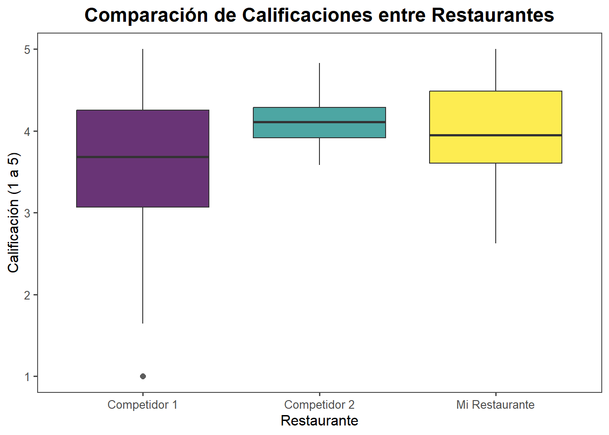
3.4 Medidas de Relación Lineal
Estas nos dicen si dos variables están relacionadas entre sí.
Imagina que además de las calificaciones que dan tus clientes, también registras cuántas veces visitan tu restaurante al mes. Quieres entender si estas dos cosas están relacionadas: ¿los clientes que visitan más tienden a dar mejores calificaciones? ¿O tal vez ocurre lo contrario?
3.4.1 Covarianza
La covarianza es una medida que nos indica si dos variables tienden a subir o bajar juntas.
- Si la covarianza es positiva, significa que cuando una variable aumenta, la otra también tiende a aumentar.
- Si es negativa, cuando una variable sube, la otra tiende a bajar.
- Si es cercana a cero, no hay una relación lineal clara entre ellas.
Sin embargo, la covarianza solo nos dice la dirección de la relación, pero no qué tan fuerte es, y su valor depende de las unidades de las variables, lo que dificulta compararla entre diferentes pares de variables. Es decir, no puedo comparar dos covarianzas de dos variables distintas.
3.4.2 Coeficiente de Correlación
Para solucionar esas limitaciones, usamos el coeficiente de correlación.
Este coeficiente es una versión estandarizada de la covarianza que siempre toma un valor entre -1 y 1:
- 1 indica una relación lineal positiva perfecta: a más visitas, mejores calificaciones, siempre.
- -1 indica una relación lineal negativa perfecta: a más visitas, peores calificaciones, siempre.
- 0 indica que no hay una relación lineal significativa entre las variables.
Por ejemplo, un coeficiente de correlación de 0.7 entre visitas y calificaciones indica una relación positiva fuerte: los clientes que visitan más suelen estar más satisfechos.
Sin embargo, que haya correlación no implica que una variable cause la otra, sólo que existe alguna relación la cual incluso puede ser casualidad no causalidad. Miremos un ejemplo donde correlación no implica causalidad:
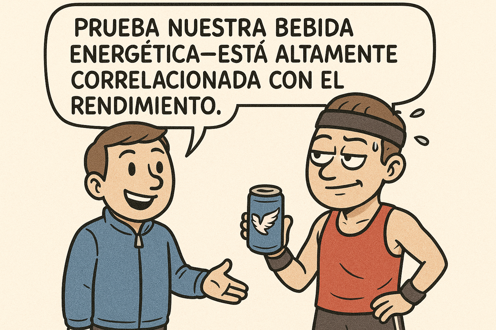
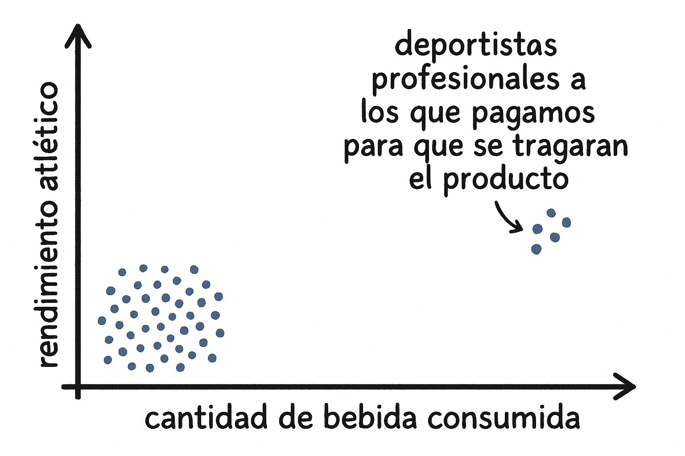